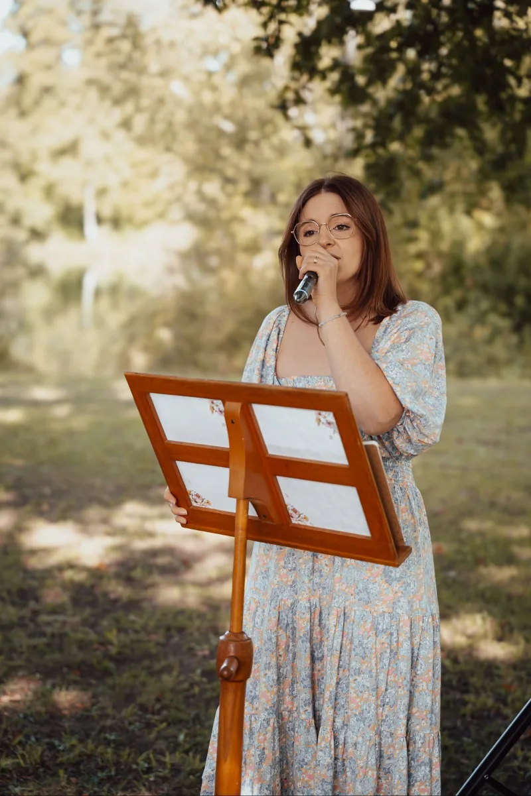
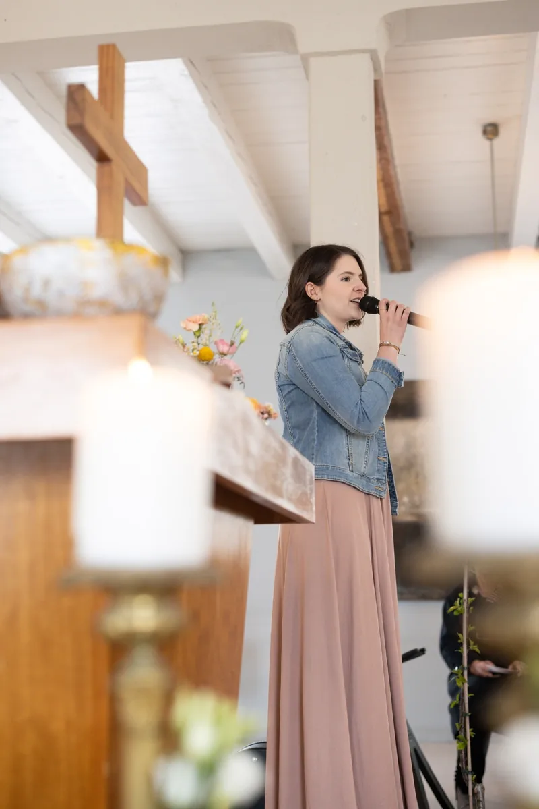
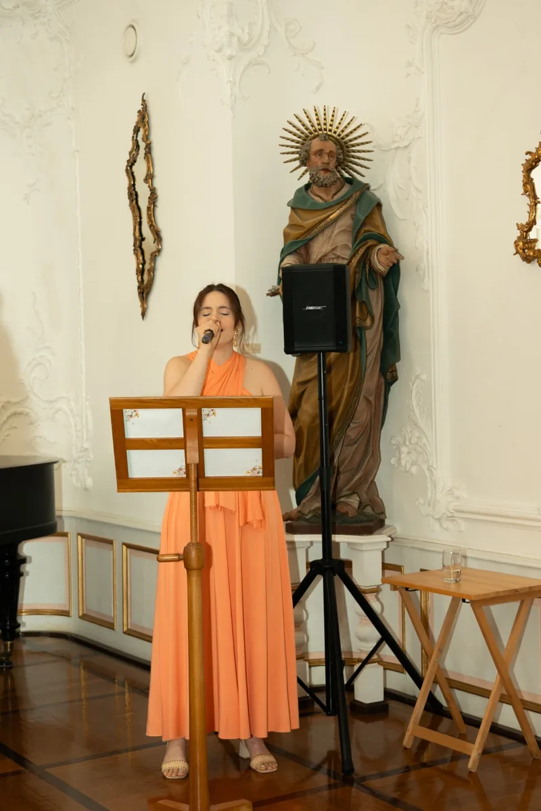
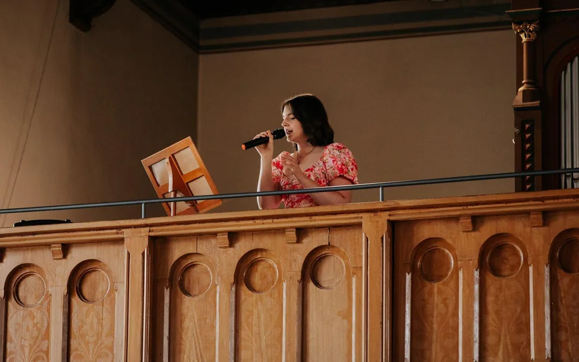

Chez moi, pas de playlist toute faite.
Votre sélection peut être aussi singulière que vous. Fans d’AC/DC, ou plutôt country à tue-tête en voiture ? Nous en ferons la musique de votre cérémonie, et vous vous reconnaîtrez dans la chanson.
Chant de mariage à Fribourg-en-Brisgau, au Kaiserstuhl et dans tout le Bade-Wurtemberg.
Activez la mélodie et faites défiler lentement : la marche nuptiale joue note après note.
Heureuse de vous voir ici.
Je m’appelle Tanisha et je chante là où deux personnes se disent oui. Avec une voix douce et les chansons de votre choix, votre cérémonie gagne encore en émotion.
Voir les tarifs et les formules

La date, le lieu et quelques lignes sur votre journée suffisent. Je vous réponds dès que possible.
Autour d’un café ou en visio. Il faut que le courant passe entre nous, et un visage familier apaise un peu le trac le jour J.
Selon vous et le style de la fête : détendues pour une cérémonie laïque, traditionnelles à l’église ou solennelles à la mairie.
J’apporte mon micro et mon enceinte, adaptés à ma musique. Cela fonctionne aussi bien en salle que dans un pré sans électricité.
Votre sélection peut être aussi singulière que vous. Fans d’AC/DC, ou plutôt country à tue-tête en voiture ? Nous en ferons la musique de votre cérémonie, et vous vous reconnaîtrez dans la chanson.
Le classique de Disney, en version allemande, suspend le temps un instant.
Tout en douceur, idéale pour les minutes qui précèdent le oui. Même les derniers invités ne retiennent plus leurs larmes.

Pour l’entrée ou l’instant qui précède le oui. Des frissons pour les mariés et tous les invités.
Envie d’en écouter plus ?
Écouter sur Instagram Ouvrir la chaîne YouTubeLa lecture charge une vidéo depuis YouTube.
J’ai 26 ans et je vis à Fribourg-en-Brisgau avec mon mari et notre chat. J’aime cuisiner et voyager, je suis une grande fan de Taylor Swift et je ne connais presque rien de plus beau que les mariages. Tout a commencé aux cérémonies de couples d’amis. Chanter pour mes amis est devenu ma passion.
2024 est l’année où j’ai épousé mon meilleur ami, après presque huit ans ensemble.
Je connais donc bien le stress et toutes ces décisions. Quand nous avons regardé notre film de mariage, les larmes sont venues précisément au moment où mes amies chantaient pour nous. C’est ce que je vous souhaite. Voilà pourquoi il faut que le courant passe entre nous, et que vous soyez heureux de me voir le jour même.

Vos souhaits, vos mots, vos émotions. La musique touche et porte l’instant, exactement comme vous le sentez.
Moderne, décontracté, avec une touche bohème. Pas de chansons d’amour classiques, mais des titres pour ce qui se passe à cet instant : deux personnes se sont choisies, et tout le monde fête ça avec elles.
Mon propre matériel de qualité m’accompagne toujours. Vous pouvez ainsi vous consacrer pleinement à vos moments, en intérieur comme dans un pré sans électricité.
Civile, laïque ou religieuse, avec 1 à 3 chansons de votre choix, selon la durée.
300 €*
Chaque chanson supplémentaire 25 €
Une heure de chant à partir de l’une de mes playlists de vin d’honneur, également pour les événements d’entreprise et autres fêtes.
450 €*
Chaque demi-heure supplémentaire 75 €
1 à 3 chansons pendant la cérémonie, puis une heure au vin d’honneur.
550 €*
200 € de moins que les deux séparément
Un baptême ou une autre occasion ? Écrivez-moi, nous trouverons ensemble la formule qui convient.
*Les frais de déplacement dans un rayon de 35 km autour de 79112 Fribourg-en-Brisgau sont inclus. Chaque kilomètre supplémentaire coûte 0,30 €.
« l’une des meilleures décisions qui soient ! »
Toutes les chansons souhaitées ont été chantées, avec assurance et émotion. Quand tous deux repensent aujourd’hui à leur cérémonie, la musique en fait pleinement partie.
Tanisha a porté les moments d’émotion. Le couple la décrit comme gentille, investie et simple, et la recommande chaleureusement.
Une chanson d’Ed Sheeran est devenue un souvenir durable. De l’aide pour choisir les titres, toujours joignable, micro et enceinte fournis.
Dès la première note, tout le monde était sous le charme. Il y a eu des frissons, et beaucoup d’invités avaient les larmes aux yeux.
Chaque recommandation vient de mon expérience personnelle. D’autres suivront, par exemple officiants, henné, DJ et décoration.
Tina crée logos et papeterie avec un grand souci du détail, à l’image de chaque couple. Nous nous sommes rencontrées à son salon « zweiteliebe ».
Romina fabrique des cadeaux de mariage créatifs et uniques, qui durent.
Jacky a filmé mon propre mariage : calmement et si discrètement qu’on la remarque à peine.
Un concept durable, beaucoup de délicatesse et une atmosphère où l’on se sent bien.
Jasmin vous accompagne comme une amie et capture de vrais moments. Nous avons travaillé ensemble lors d’un shooting d’inspiration.
C’est ici que nous nous sommes mariés : un accompagnement personnel dès le premier échange et une atmosphère magnifique.
Julia conseille avec calme, chaleur et honnêteté, en étant très à l’écoute des souhaits de chaque mariée.
Oui.
Je vous réponds dès que possible, puis nous fixerons notre rencontre. J’ai hâte de vous connaître.